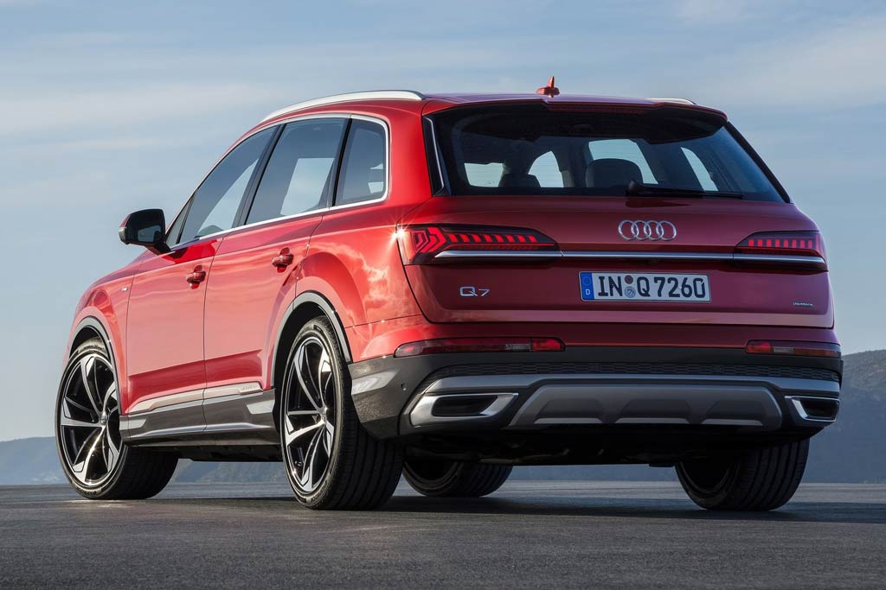

Рестайлинговый кроссовер Audi Q7 FL немцы презентовали в конце июня две тысячи девятнадцатого. Мировая премьера модели пройдет в сентябре на автосалоне во Франкфурте — тогда же стартуют и европейские продажи. До России же первые машины доберутся лишь в первом квартале двадцатого.
Новый кузов Ауди Q7 2021 года обзавелся полностью иной головной оптикой, которая уже в базе идет светодиодной, при этом за доплату можно заказать лазерно-люминофорный дальний свет. Немного изменилась форма массивной решетки радиатора, причем отныне на ней разместились вертикальные хромированные прутья, ставшие фирменной чертой всех вседорожников из Ингольштадта.
Кроме того, ревизии подверглись бампера и выполненные более рельефными накладки на порогах. Задние фонари на машине стали уже, а по низу их «подпирает» хромированная накладка на всю ширину пятой двери. Кроме того, для Кью 7 стали доступны новые варианты дизайна колесных дисков и особый оттенок кузова «Matador Red».
На снимках изображен Audi Q7 S-line — спортивный пакет предусматривает более агрессивное оформление переднего бампера с увеличенными боковыми секциями в переднем бампере, обрамленными темно-серыми накладками, большие колеса и пару широких патрубков выпускной системы в заднем бампере. В остальном вседорожник повторяет дореформенную версию.
В салоне нового Ауди Ку7 2021 царство дисплеев. В базе машине положен положен щиток приборов с аналоговыми шкалами, но за доплату предлагаются фирменный «Virtual cockpit» на 12,3-дюймовом экране и проекция на лобовое стекло. На дореформенном кроссовере монитор медиасистемы MMI выезжал из передней панели, а теперь от данного решения отказались.
Сейчас на вседорожнике в стандартное оснащение включены два тачскрина на центральной консоли — верхний диагональю 10,1″ отвечает за управление навигацией и разавлекательной системой, а нижний на 8,6 дюйма заведует за настройки микроклимата и комфорта (например, обогрев, вентиляция и массаж сидений), плюс с него можно набирать текст, хотя имеется и распознавание речевых команд.
Примечательно, что наличие большого количества дисплеев практически целиком избавило машину от физических кнопок. Зато сами экраны оснащены тактильной обратной связью и приятно вибрируют в месте нажатия иконок. Также отметим, что со сменой поколения Ауди Ку 7 обзавелся модной полоской воздуховодов на всю ширину передней панели и новым многофункциональным рулевым колесом. На заднем ряду Ауди Q7 2021 комфортно и просторно, хотя высокий центральный тоннель не позволит с удобством разместиться третьему пассажиру. Диван второго ряда можно двигать в диапазоне 100 мм, а спинки регулируются по углу наклона, плюс имеется третий ряд. Крышка багажника в базе оснащена сервоприводом, но функция бесконтактного открывания идет за доплату.
Новый Audi Q7 (Typ 4M) базируется на модульной платформе MLB, которая используется также на таких моделях как Фольксваген Туарег, Порше Кайен, Бентли Бентайга и Ламборгини Урус — хорошая компания! По сравнению с машиной первой генерации, массу большого кроссовера удалось снизить разом на 325 кг, в том числе за счет облегченного кузова: капот и передние крылья здесь из алюминия, а каркас каркас выполнен из ультравысокопрочной стали горячей формовки.
За счет новых бамперов габаритная длина Ауди Ку7 2021 модельного года увеличилась до 5 063 мм (+ 11), колесная база машины равна 2 994, ширина дореформенной версии — 1 968, высота — 1 741, объем багажника в пятиместной конфигурации заявлен на уровне 865 литров, а при сложенных спинках второго ряда получается внушительный отсек на 2 050 л. На европейском рынке для Ауди Q7 II предложено два 3,0-литровых турбодизеля V6 TDI — вариант 45 TDI развивает 231 л.с., а более мощный 50 TDI выдает 286 «лошадок». При этом бензиновый 3,0-литровый TFSI был модернизирован — теперь вместо приводного нагнетателя здесь используется турбокомпрессор, что позволило увеличить отдачу с 333 до 340 сил, а пиковый момент вырос с 440 до 500 Нм. Разгон до сотни с ним сократился на 0,2 секунды — до 5,9 сек.
Все перечисленные движки сочетаются в паре с 8-диапазонной автоматической коробкой передач и идут с фирменной системой постоянного полного привода quattro. По умолчанию тяга распределяется между осями в соотношении 40:60 в пользу задних колес, но при необходимости дифференциал может перекидывать до 70% момента на передние колеса, либо до 85% — на задние. Но вот важный момент: рестайлинговый Ауди Ку 7 2021 обзавелся гибридной надстройкой в виде стартер-генератора с ременным приводом, который работает от отдельной 48-вольтовой сети. Для ее питания машину оснастили литий-ионным аккумулятором в заднем свесе, который «съел» 25 литров полезного объема в багажнике.
Данный стартер-генератор помогает кроссоверы в первые секунды начала движения, а также отвечает за быстрый запуск двигателя, который электроника может заглушить на время до 40 секунд в случае движения накатом на скорости от 55 до 160 км/ч, при этом при торможении перед светофором движок может быть выключен на 22 км/ч. Все это позволяет экономить до 0,7 литров топлива на сто километров пробега. Кроме того, для нового Ауди Q7 стали доступны активные электромеханические стабилизаторы (иду только вкупе с пневмоподвеской), которые раньше предлагались только для Audi SQ7. Помимо них в пакет мехатронного шасси вошел задний рулевой механизм вкупе с более короткой передней рейкой (2,4 оборота от упора до упора вместо 2,9), а вот активный задний дифференциал с изменяемым вектором тяги для «ку-седьмого» по прежнему не положен.
Старт продаж Ауди Ку7 после рестайлинга в России пришелся на первый квартал 2020 г, причем сборку кроссоверов для нашего рынка наладили на предприятии «Автотор» в Калининграде. Кроме того, позже стало известно, что бензиновые версии модели у нас продаваться больше не будут — в списке предложений остался только вариант с дизелем, на который приходилось до 98% спроса. За базовый вариант модели у нас просят 5 100 000 рублей, при этом цена Ауди Q7 2021 с пакетом Advance начинается от 5 345 000 рублей, версия Sport стоит от 5 567 000, а Business — от 5 760 000 р.